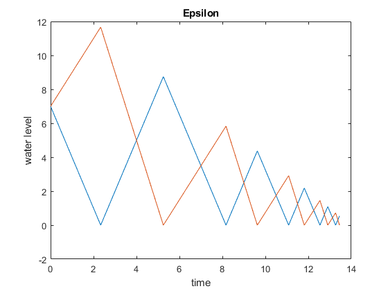
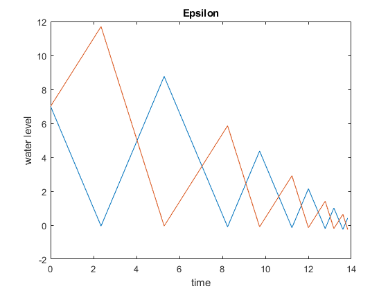
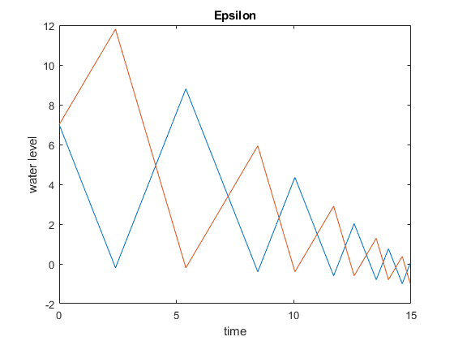
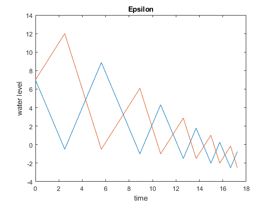
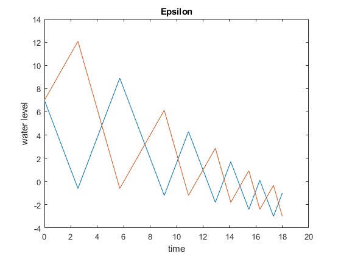

Contents
Hybrid Control Homework #2
clc; clear; close all;
Problem 1 Spatial
r1 = 5;
r2 = 5;
v1 = 3;
v2 = 4;
w = 6;
epsilon = [0, 0.05, 0.2, 0.5, 0.6];
for j = 1:length(epsilon)
x1 = 7;
x2 = 7;
x3 = 0;
x4 = 0;
x0 = [x1; x2; x3; x4];
Tspan = [0 10] ;
t0 = 0 ;
t_vec = [] ; x = [] ;
q0_bool = false;
q1_bool = false;
if x0(1) <= x0(3) - epsilon(j)
func = @(t,x) q1(t,x,w,v1,v2,r1,r2);
options = odeset('Events',@(t,x) event_q1(t,x,w,v1,v2,r1,r2,epsilon(j)));
q1_bool = true;
else
func = @(t,x) q0(t,x,w,v1,v2,r1,r2);
options = odeset('Events',@(t,x) event_q0(t,x,w,v1,v2,r1,r2,epsilon(j)));
q0_bool = true;
end
for i = 1:10
[t,x_vec] = ode45(func, t0+Tspan, x0, options) ;
t_vec = [t_vec; t] ;
x = [x; x_vec] ;
x0 = x_vec(end,:);
t0 = t_vec(end);
if x0(1) <= x0(3) - epsilon(j) && q0_bool
func = @(t,x) q1(t,x,w,v1,v2,r1,r2);
options = odeset('Events',@(t,x) event_q1(t,x,w,v1,v2,r1,r2,epsilon(j)));
x0(3) = x0(1);
q1_bool = true;
q0_bool = false;
elseif x0(2) <= x0(4) - epsilon(j) && q1_bool
func = @(t,x) q0(t,x,w,v1,v2,r1,r2);
options = odeset('Events',@(t,x) event_q0(t,x,w,v1,v2,r1,r2,epsilon(j)));
x0(4) = x0(2);
q0_bool = true;
q1_bool = false;
end
end
figure();
plot(t_vec,x(:,1));
hold on;
plot(t_vec,x(:,2));
xlabel("time");
ylabel("water level");
k = epsilon;
title("Epsilon");
hold off;
end
    